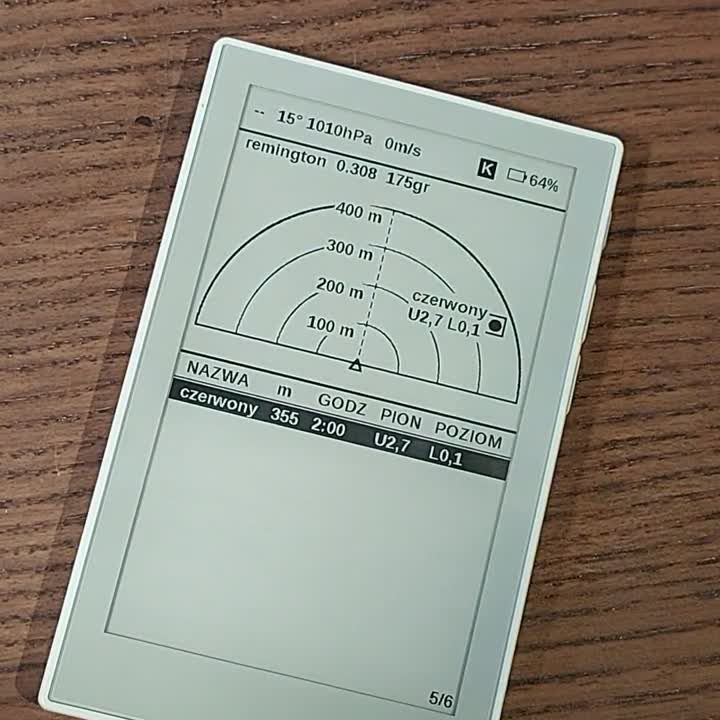
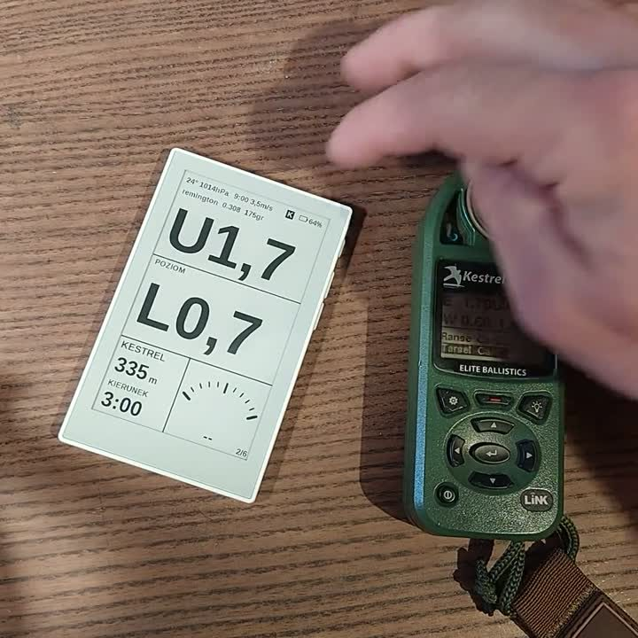

sniperSticky
Wersja 0.6.5 · 9 listopada 2026
Urządzenie z ekranem e-papierowym
Kalkulator balistyczny na ekranie e-papierowym, mocowany przy lunecie. Liczy poprawki bez telefonu i bez sieci, pogodę i wiatr bierze z Kestrela.
Po co to jest
Telefon przy karabinie przeszkadza. Trzeba go odblokować, ekran gaśnie, a w pełnym słońcu trudno coś odczytać.
Ekran e-papierowy jest czytelny w pełnym słońcu i zużywa prąd tylko przy zmianie obrazu. sniperSticky pokazuje na nim nastawę dla wybranego celu dużymi cyframi, które widać bez odrywania oka od broni.
Sprzęt
Program działa na reTerminal Sticky firmy Seeed: mikrokontroler ESP32-S3, ekran 3,97 cala o rozdzielczości 800 × 480, akumulator 750 mAh, masa 70 g. Oprogramowanie napisałem od zera w C++.
Co liczy i pokazuje
- nastawę w pionie i w poziomie w tysięcznych dla jednego celu albo dla czterech celów naraz,
- kartę odległości z celami na łukach odległości i tabelę poprawek co 100 m,
- przechył boczny broni,
- oddany strzał, wykryty akcelerometrem.
Silnik balistyczny jest przepisany z SniperTAK. Wyniki różnią się od wtyczki najwyżej o 0,05 tysięcznej.
Gdy brakuje danych, w miejscu liczby stoi „--”. Program nie podstawia wartości domyślnych.
Współpraca z Kestrelem
Sticky łączy się z wiatromierzem Kestrel 5700 przez Bluetooth. Pobiera z niego pogodę, wiatr, profile broni i cele. Może też pokazywać nastawy policzone przez sam Kestrel. Protokół Kestrela odtworzyłem wcześniej przy wtyczce SniperTAK.
Stan prac
Działa wersja 0.6.5. Nowe wersje Sticky pobiera sam przez Wi-Fi, a profile i cele zostają w pamięci.
Następna wersja dodaje nastawy w minutach kątowych (MOA). W przygotowaniu są połączenia z dalmierzami Vortex Impact 4000 i Leica CRF 2700-B oraz wymiana celów i profili z wtyczką SniperTAK.
Zdjęcia i film poniżej pokazują urządzenie w wersji z początku listopada 2026, z Kestrelem 5700 obok.
Film
Zdjęcia


